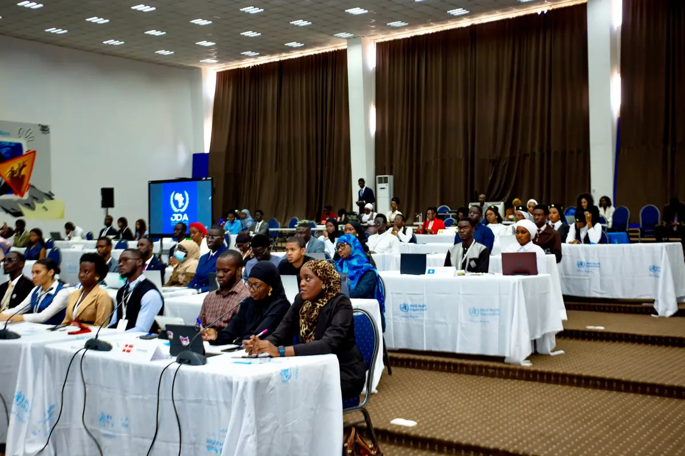
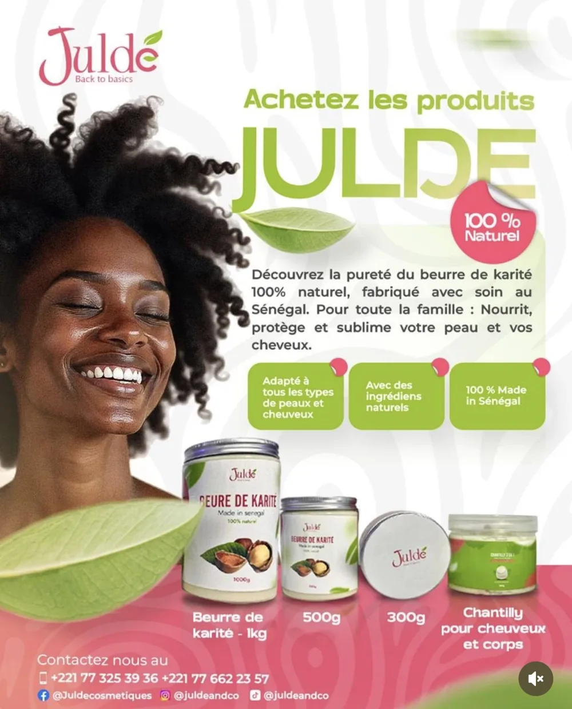
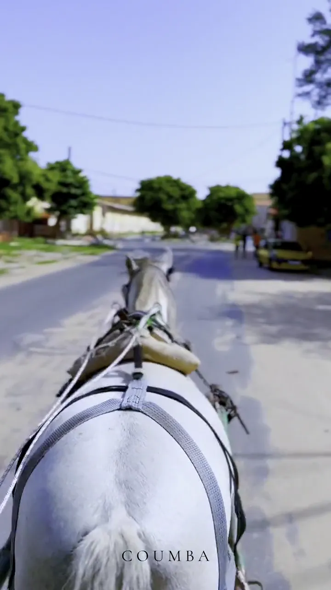
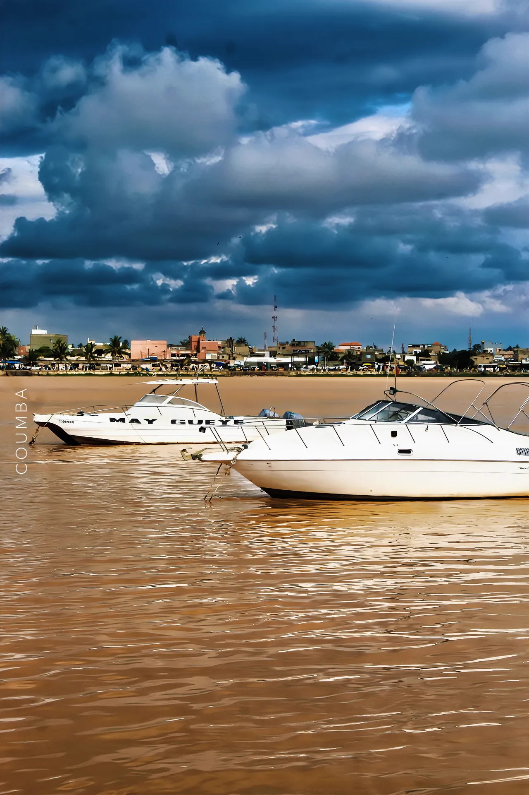

Réflexion stratégique
Diagnostic de communication, définition des publics et des messages, plan de communication opérationnel.
COMMUNICATION · STRATÉGIE · CRÉATIVITÉ
Je suis Coumba Ndiaye, communicante institutionnelle et digitale, fondatrice de Lady Coumba Agency. J'ai piloté en autonomie la communication d'un événement diplomatique pour la COMIAC, animé les réseaux sociaux de deux marques et présidé une amicale étudiante.
Portrait de Coumba Ndiaye
Ajouter la photo dans assets/image/Fondatrice et directrice
EXPÉRIENCES AUPRÈS DE
MON APPROCHE
Chaque projet commence par deux questions : à qui parle-t-on, et pour dire quoi ? Les messages, les supports et les canaux en découlent.
Diagnostic de communication, définition des publics et des messages, plan de communication opérationnel.
Communiqués, publications et discours institutionnels, supports visuels conçus sur Canva : affiches, présentations, visuels de marque.
Stratégie de contenu, calendrier éditorial et animation de Facebook, Instagram et TikTok pour des marques.
Communication d'événements à dimension diplomatique : termes de référence, plan de communication, supports et coordination.
MON PARCOURS EN ACTION
Pilotage de la communication du 250e anniversaire de la Révolution Torodo : diagnostic, plan, supports et coordination.

Engagement & communicationSupports du JDMUN, contenus digitaux et discours institutionnels.

Communication digitaleCalendriers éditoriaux et animation des réseaux de Juldé Cosmétique et d'Evvoli Sénégal.

Contenu vidéoVlog, séances de sport, restaurant : des formats pour mettre un lieu en scène.

PhotographieUne sélection de photos prises par mes soins.